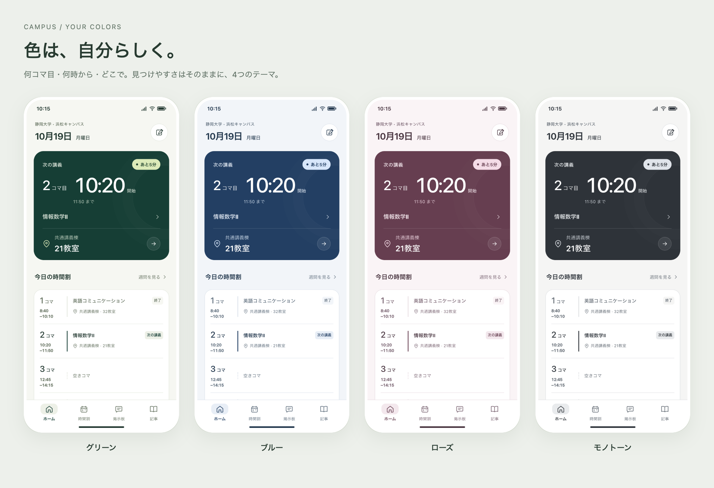

まず、時刻と場所。
開始時刻を最も大きくし、コマと教室を一枚にまとめる。
何コマ目・何時から・どこで。必要な情報が一度に目に入るホームの提案。
操作できるモックを開く ↗「記事」タブから記事一覧・詳細のモックへ移動できます。ホーム講義詳細の関連する記事も、講義に対応した一覧へ進めます。

講義前の見え方。日付・時刻・講義・教室は仮データです。
開始時刻を最も大きくし、コマと教室を一枚にまとめる。
終了・講義中・次の講義・空きコマを文字でも区別する。
場所からマップ。講義からメモ・掲示板・関連記事へ。
対象はホームの見た目と操作の見本。PDF解析・投稿・アカウント・実地図の実装は含みません。通信を使わず表示でき、メモの試し書きはこのページのメモリ内だけに保持します。
構成は上部の次講義カード、今日の一覧、メモとマップの入口、下部の4タブ。状態選択やシート表示は固定サンプルで動作します。第1段階で見た目と操作をレビューし、必要な修正を経てから本実装の範囲を決めます。

情報の位置はそのまま、背景・カード・タブ・シートをまとめて着せ替えます。操作モックのテーマボタンで試せます。テーマIDだけをブラウザー内に保存し、個人の予定やメモは送信しません。
講義詳細の「この講義の掲示板」から、同じ講義の公開掲示板へ移動できます。投稿一覧・タグ・返信・ペンネーム／匿名投稿の操作見本は005にまとめています。
今回の追加部分はソース/VMで検証し、実ブラウザー描画は未検証です。
コマ・開始時刻・教室が、ホームの最初の表示で分かる。
今日の一覧で、終了・次の講義・空きコマを確認できる。
時間帯に応じて、ホームの主役を切り替える。
未登録と講義なし、教室不明と既知の場所を区別する。
場所・講義・メモ・4タブの入口を押して確認できる。
4つのテーマを、情報の位置を保って切り替えられる。
狭いスマホ幅でも、最優先の情報が隠れない。
製品の実装・公開・実データの取得は含めない。
履修登録PDFに、アプリが用意する浜松キャンパスの日程を適用して登録する。
PDF登録入口から004の操作モックへ進み、履修PDFの読取り結果と、アプリの日程を適用した除外・例外を確認する。学生による年間予定表の提出は不要。004の仕様と画面案を参照。初期画像は以前の見本で、登録先の操作は004へ更新。実PDF解析・既存の仮データへの実登録は行わない。
モック作成を止める判断はなし。配色・密度・タブ構成・マップの表示方式は今回の提案であり、ユーザー評価は未受領です。実際の授業時刻とPDF形式、変更情報の更新方法は本実装前に確認します。
ホームの見た目や情報の優先順位へのコメント
回答やコメントの受領と、本実装への承認は別です。今回の依頼はモック作成です。
このHTMLの図版は同梱されています。関連Markdownと操作モックは別ファイルです。